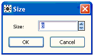
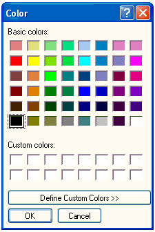

![[attributesmenu0]](attributesmenu0.bmp) The Attributes Menu
The Attributes Menu
Contents
General properties
Weight
Fixed Size...
Size...
Fixed Color
Color...
Default Font
Font...
Typeface...
General properties [top]
The commands change the appearance of text in documents. They either act on the highlighted text or affect the appearance of subsequently entered text.
Weight [top]
The commands in this group set the weight of the highlighted text. The weight can either be Regular, Bold, Italic or Underline. If the entire highlighted text is of one single weight a tick mark will appear against the relevant weight.
Fixed Size [top]
The commands in this group change the size of the highlighted text to a predefined font size. Sizes available are 8, 9, 10, 12, 16, 20 and 24pts. If the entire highlighted text is of one single font size a tick mark will appear against the relevant size.
Size... [top]
This command opens a non modal dialog box which allows the user to choose the font size for the highlighted text.

Fixed Color [top]
The commands in this group change the color of the highlighted text to a predefined color. Colors available are Default Color, Black, Red, Green, and Blue. If the entire highlighted text is of one single color a tick mark will appear against this color.
Color... [top]
This command opens a modal dialog box which allows the user to choose the color for the highlighted text.

Default Font [top]
This command changes the highlighted text to be in the default font. If the entire highlighted text is in the default font a tick mark will appear against this option.
Font... [top]
This command opens a modal dialog box which allows the user to choose the font for the highlighted text. The color of the text can also be chosen from a restricted range of options. This command is useful for entering Greek characters into a document.
![[attributesmenu3]](attributesmenu3.bmp)
Typeface... [top]
This command is a simplified version of the Font... command without the ability to change the color of the text.